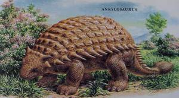
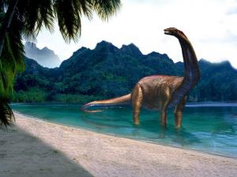
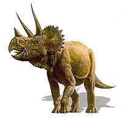
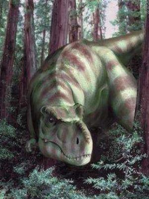

Ankylosaurus
Add to Favourites
Ankylosaurus was a huge armored dinosaur, measuring about 7-11 m long, 2 m wide and 1.2 m tall; it weighed roughly 3-4 tons.
Its entire top side was heavily protected from carnivores with thick, oval plates embedded (fused) in its leathery skin, 2 rows of spikes along its body, large horns that projected from the back of the head, and a club-like tail. It even had bony plates as protection for its eyes. Only its under-belly was unplated.
Ankylosaurus was the last of the ankylosaurids (armored dinosaurs) to evolve, and the biggest. It lived in the late Cretaceous Period, about 70-65 million years ago. Ankylosaurus and all the other dinosaurs (except birds) perished in the Cretaceous-Tertiary extinction, 65 million years ago. Among its contemporaries were the large meat-eating Tyrannosaurus, Tarbosaurus, and Deinonychus.
Apatosaurus
Add to Favourites
Apatosaurus (once incorrectly known as Brontosaurus) was one of the largest land animals that ever existed. This enormous plant-eater measured about 20-27 m long and about 4.5 m tall at the hips. It had a long neck (with 15 vertebrae), a long whip-like tail (about 15 m long), a hollow backbone, peg-like teeth in the front of the jaws, and four massive, column-like legs.
This huge, extremely heavy reptile was an herbivore (it ate only plants, like conifers, other tree leaves and ferns). It must have eaten a tremendous amount of plant material each day to sustain itself. It had blunt pencil-like teeth, arrayed like a garden rake; these were useful for stripping and gathering foliage.
Apatosaurus swallowed leaves and other vegetation whole, without chewing them, and had gastroliths (stomach stones) in its stomach to help digest this tough plant material.
Triceratops
Add to Favourites
Triceratops was a rhinoceros-like dinosaur. It walked on four sturdy legs and had three horns on its face along with a large bony plate projecting from the back of its skull (a frill). The horns were possibly used in mating rivalry and rituals.
Triceratops was about 9 m long, 3 m tall, and weighed up to 6-12 tons. It had a large skull, up to 3 m long; nearly one-third as long as its body.
Triceratops lived in the late Cretaceous period, about 72 to 65 million years ago, toward the end of the Mesozoic, the Age of Reptiles. It was among the last of the dinosaur species to evolve before the Cretaceous-Tertiary extinction 65 million years ago.
Tyrannosaurus
Add to Favourites
T. rex was a huge meat-eating dinosaur that lived during the late Cretaceous period, about 85 million to 65 million years ago. T. rex lived in a humid, semi-tropical environment, in open forests with nearby rivers and in coastal forested swamps.
Tyrannosaurus rex was a fierce predator that walked on two powerful legs. This meat-eater had a huge head with large, pointed, replaceable teeth and well-developed jaw muscles. It had tiny arms, each with two fingers. It was up to 12 m long, 4.5 to 6 m tall roughly 5 to 7 tons in weight.
Tyrannosaurus had a stiff, pointed tail, used as a counterbalance for its enormous head, for agility and for making quick turns.